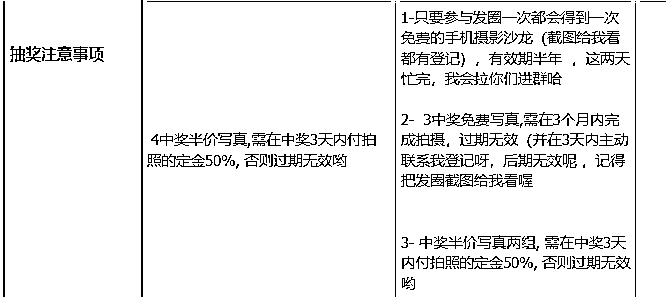

来源：https://dqez6wornz.feishu.cn/docx/EQTadUMWAoND2pxVkWkcKCfgnnh
开始怀着忐忑的心情做这场活动的，我这几天不是在做七夕写真活动吗
也是新方式的合作，算新的尝试，有很多新的收获，想把这份收获分享给大家
希望对需要的人有帮助，今天的分享主题：
利用节日营销玩法，七夕日入4位数，摄影师的变现复盘总结
下面分三个板块介绍：
【1】为啥要利用节假日搞钱
【2】利用节日搞钱，有哪些具体的流程
【3】日入4位数，我只用了4个思维
01给用户一个下单的理由
节假日搞钱其实也算是一种营销节点，跟每年的双十一 618之类一样，这种节点也可以理解是顺势去做一件活动，所以也是给客户一种下单的理由
02成交潜在新用户
这种中型的活动，我一般三四个月做一次，主要是想批量的去成交一波用户，这样子平时佛系些，主要去做内容获客就行，也会节省很多的精力，时间去做更重要的事情
03裂变更多新用户
成交的同时，也不影响裂变，所以就做了一个抽奖写真的活动，我想让客户裂变更多他们身边的用潜在用户，为我下一次活动做储蓄种子
准备好你的相关文案
比如产品使用场景
比如激发美好
卖产品就是卖图片，所以离不开主要的产品说名，包括
前后对比：
主要是让用户感受直观感受到，自己用完之后能得到什么效果？
就像我们买东西都会发现有一个前后对比，明显的对比能够激发我们的美好动机，同时感官刺激也是能够刺激我们的购买欲
用户反馈：
其实对于消费者来说，商家的评价远不如身边人的评价，就像你买一样东西，你会选择去问一下你身边使用过的朋友，作为消费者会主观的认为和自己是站在同一边的，反之认为商家和自己是站在对应面的，这个就是我们为什么要做这些用户反馈的原因
你的背书：
很多大牌都会不停找明星做代言，主要是增加品牌的影响力，因为影响力就是钱，其次会让消费者认为，你的产品这么多厉害的人使用，说明你的产品也不差呀，从而也有溢价的空间
所以我为啥定期要去拍一些百万博主也是这个原因
个人故事：
人也是情绪驱动的品种，如果你自己的经历能够越公开越透明在平台自媒体上面，身边的对你了解就越多，然后他们选择你的概率就会越高，因为所有的消费行为基本来自于信任，有了信任才会有后续的成交 转介绍
在这里说一个我自己的故事，其实我之前对麦当劳是没有什么感觉的，很少吃，但是后面我自从看了一部电影麦当劳的创业史，名字叫大创业家，就开始对他们的品牌有了一些新的认知和感动，后面基于这个了解，让我大部分情况下会优先选择了麦当劳
这就是个人或品牌故事的魅力
这个就涉及到销售目标，所以需要精细化运营，最好是把老客户和新客户的文案是要分开， 因为不同的话术对应的作用是不一样的
比如面对老客/信任度不够/消费力不够的，我主要想引导他们帮我裂变
比如面对新客，我主要是引导成交
因为我这次主要活动目的是做裂变以及做成交
所以你就需要有一个诱饵，诱饵我设定的是免费的写真➕半价写真，免费的手机摄影沙龙，只要参与的都会得到免费摄影沙龙，免费写真的话就是看运气
1）免费写真名额x1
主要用来引流裂变的，参加这个的话呢就是，需要帮我发一条朋友圈就可以了，基本每天都有有人加我10-20个人
2）半价写真x2
这个就是我产品的一部分了，中奖的引导他们去做买半价的，确实也比较优惠比平时大，如果说有需求的话大概率也会下单
所以平时的价格可以标高一点，以后做活动的时候就可以比较好卖一些，也有营销空间
3）免费手机摄影沙龙（参与发圈都有份）
这个主要是让大家有一个明确的反馈机制只要发了朋友圈都会有收获
20个人参加还是五个人参加，对我来说成本都一样。所以对我来说也没有什么关系，我就把它打包进来一起做了活动了
因为人需要的是一种当下获得感， 只要这样他当下感觉自己有收获就可以，最后你会发现赚的还是自己
所以像这种人人参加都有获得的产品，可以去思考有什么边际成本的，不管是多少个人成本都不会有什么变化的，这种就比较合适用
制作抽奖的流程：
第一，目的明确+用户需要付出什么
第二，用户能得到什么
第三，抽奖注意事项
根据你的奖品去你拟定注意事项即可

第四，抽奖群建立
01群公告：这样用户进群看群公告就知道流程了，大大减少沟通的时间
02发圈素材：文案1➕图片4张
①文案1条（3条备用文案可以3选1）
②配图：抽奖海报1张➕二维码1张➕作品3-4张）
（以上你需要准备好给用户）
卖产品也就是卖海报
海报一定简约 凸显优惠力度。
好的海报主要包括活动主题，优惠力度以及对方得到的东西，以及整个的流程和保障就可以
总之尽可能要简约明了，不要让客户有犹豫的空间，卖产品也就是卖海报，如果说你的海报上面有太杂太乱样，用户有犹豫的空间，就影响下单速度。
提前做了准备之后，后面就是复制发圈，复制发圈就好了，真的很香，很节省思考的成本
预告——正式发布——收钱——不同素材来回发——倒计时收官
前面1-3天，尽量是每天发三条朋友圈
后面4-7，可以稍微频繁到4-7条左右， 如果担心被屏蔽，可以发布两小时后，仅自己可见
预告：
正式发布：
收钱+不同素材来回发：
倒计时收官：
6-8天比较合适，太短效果不明显，太长人容易疲惫
我这一次进行比较快，就是从我想做到落地，其实也就花了一天两天的时间，这个过程没有很耽误
主要是因为我上一次做活动，有沉淀素材。可以理解成的执行sop，也可以理解做短视频的框架，比如你的开头 中间 结尾 音乐 音效等，这些就是你的框架，而这个框架可以帮你节省很多的时间，下次再用不需要从0开始做，直接从60分开始做，就去这个意思
很多人用说，怎么管理时间，其实管理时间的本质就去，你越是能协同更多人，你就会拥有更多时间，所以要多做一对多的事情
比如我这次昨晚活动，我就写了复盘，写了复盘又在咋们完赚的各个会员群分享，这几个群人数也有3k➕人了，回头我还会在我付费的各个星球同步，这个指数可能又增加一万多人了
这就是一对多的事，也是一鱼多吃的方式
这次活动我担心自己后面能量越来越弱，怕自己中途会放弃，反馈不强，想找一个人给自己一点鼓励以及优化，我就在生财里面找了一个朋友跟他聊了一下，当时我没有很用心的要去说合作这件事情，只是简单的说了一下情况， 大概就是说我现在要做什么？然后需要他帮助我什么？提成如何？我们就一拍即合的做了
下面是对方给我做的思维导图，拆解的比较细致，本次合作收获很大
第一， 有人鞭策着往前，不容易躺平
尤其是我现在又没有什么团队的小伙伴，所以我特别需要这种外界的支持
第二， 学会了用数据看结果，而不是感觉判断
这个是他给我的复盘的框架 ，复盘可以更好的看到自己主要是在哪方面有问题？哪方面有增长，然后针对性的去做解决和优化
这次活动需要用到一些群发内容，所以有时候信息因为标签做的不够精细化，导致信息有时候没有发在对的人身上，出现不友好的反馈
所以通过这件事情就更加重视我自己的标签，后面找了很多教程才发现原来一直有这个批量做标签的功能
这是我在抖音找的批量做标签的教程，真的很好用！链接放下方了：
（个人建议：不是很建议用工具去做清理，因为那些工具他会有可能透露你的客户信息，我之前用过一次，然后我的客户老是频繁收到各种骚扰信息，就客户容易受到骚扰，容易影响自己各方面 ，所以比较建议手动删除，虽然说比较慢，我最近使用的是手动批量删除超级好用）
【批量做标签的教程】
4.33 复制打开抖音，看看【鲁修修的作品】怎么给微信好友分组？微信好友怎么打标签？ 6000... https://v.douyin.com/irhG79Kc/ d@A.tr 04/23 oQK:/
意向客户咨询，你挖掘需求，明确问题需求，给出解决方案+过往案例
哈哈哈哈屡试不爽，很好用！
营销活动，其实自己走的挺顺滑的，做的次数也很多了，每次做都有新的进步
但我的用户不够多，所以我下半年打算找帮忙玩赚合伙人做群发售
这样子就可以批量去成交用户，平时就可以专注的去做流量，然后再做转化，不断重复
用群发售的的形式去做转化，这样子可以节省自己的成交路径，也可以提高自己的单位时间效率
我们平时多数是一对一做个人风格的诊断，这次的活动我打算做一个免费的那种，可以一对多，就是做个风格诊断群类似，比如诊断穿搭的 发型的 写真的 好看的，角度的等等，反正就是跟美相关的，主要功能是蓄水
结果结束后马上就做了，下面是变美社群的框架
以上就是今天的所有分享
最后感谢大家观看，希望我们都可以大牌自由，时间自由
欢迎大家我加朋友圈，一起提升审美